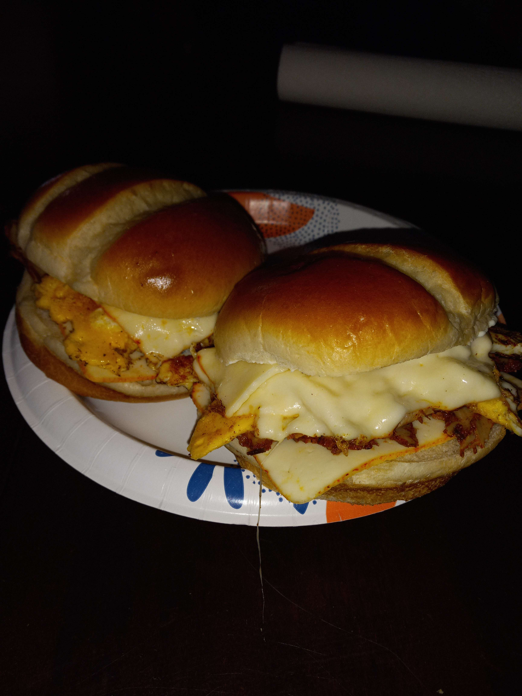
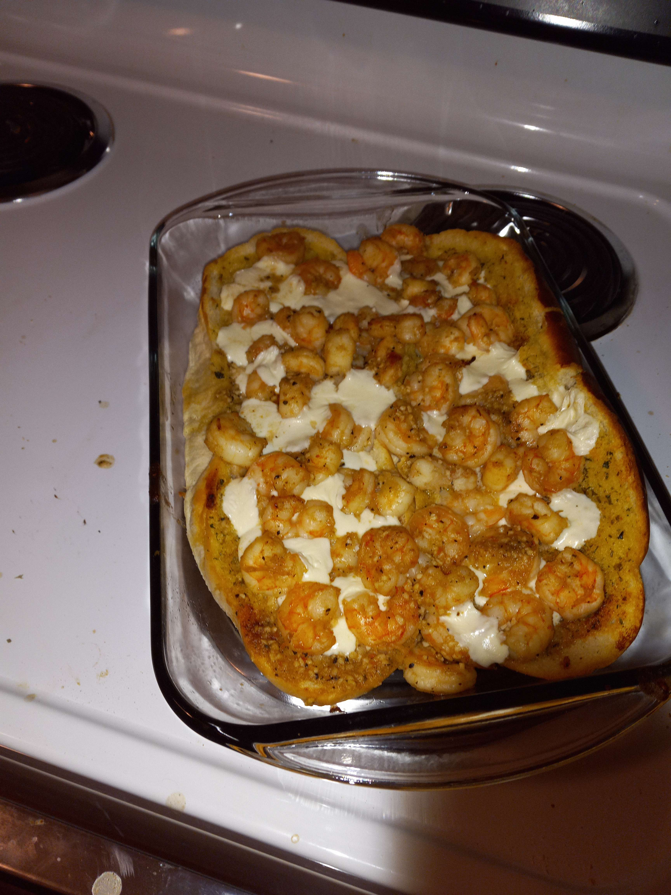

My Love for Cooking
I discovered my passion for cooking during my early teen years, though my love for food has always been there. At my church, we used to have big dinners every Wednesday and Sunday, either ordered or cooked in the small, cramped kitchen. One day, I wanted to recreate a dish I remembered from those church dinners. Without a recipe, I made the perfect tater tot casserole from memory. This experience ignited my love for experimenting in the kitchen, trying foods from different cultures, and adding new spices and techniques to my cooking skills.
 